Explore o mundo com o Viaje+
Inspire-se com lugares incríveis para sua próxima viagem!
Nossos destinos em imagens
Descubra lugares incríveis para conhecer pelo mundo!

Argentina
Conheça cidades charmosas e belas paisagens.
Rio de Janeiro
Conheça mais um pouco da, Cidade Maravilhosa
Pão de Açucar

O Pão de Açúcar é um dos pontos turísticos mais famosos do Rio de Janeiro, localizado no bairro da Urca. Sua imponente formação rochosa é um dos símbolos da cidade, atraindo visitantes de diversas partes do mundo. Do alto, é possível apreciar uma vista panorâmica incrível das praias, do mar, do Cristo Redentor e de grande parte da cidade. O passeio de bondinho é uma das principais atrações, proporcionando uma experiência inesquecível em meio à beleza natural da Cidade Maravilhosa.
Parque Lage
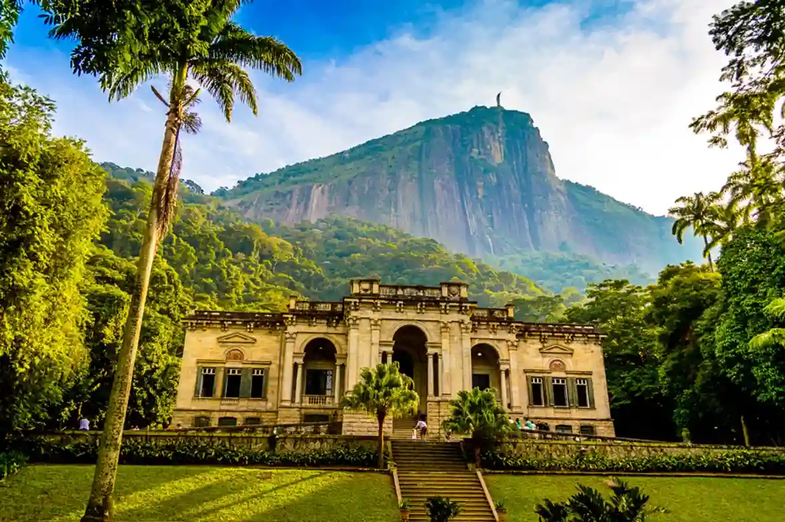
O Parque Lage é um dos lugares mais encantadores do Rio de Janeiro, localizado aos pés do Corcovado e cercado pela exuberante Mata Atlântica. Seu interior abriga um belo palacete histórico, com arquitetura elegante, jardins encantadores e um famoso pátio com piscina que proporciona um cenário único. O local também conta com espaços culturais e um café muito conhecido, sendo ideal para passeios, fotografias e momentos de tranquilidade em meio à natureza.
Cristo Redentor
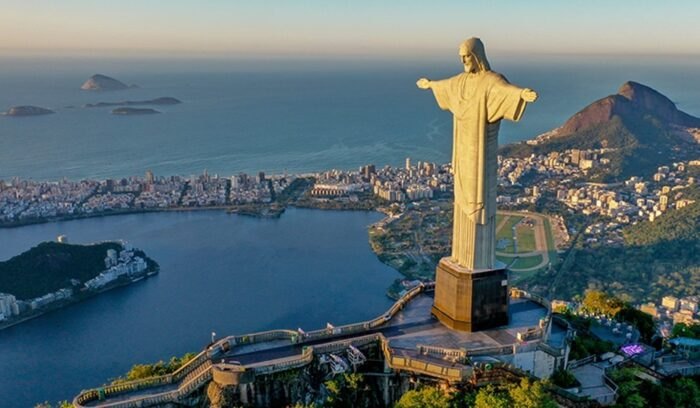
O Cristo Redentor é um dos monumentos mais famosos do Brasil e um dos principais cartões-postais do Rio de Janeiro. Localizado no alto do Morro do Corcovado, dentro do Parque Nacional da Tijuca, o monumento possui 30 metros de altura e seus braços abertos simbolizam acolhimento e paz. Do alto, os visitantes podem apreciar uma vista panorâmica deslumbrante das praias, montanhas e de grande parte da cidade. Reconhecido como uma das Novas Sete Maravilhas do Mundo, o Cristo Redentor é uma atração imperdível para quem deseja conhecer a Cidade Maravilhosa.
Chile
Conhcendo mais das paisagens do, País dos Poetas
Deserto do Atacama
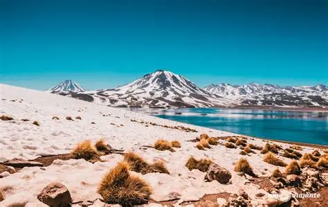
O Deserto do Atacama, localizado no norte do Chile, é considerado um dos lugares mais fascinantes da América do Sul. Conhecido por suas paisagens áridas, montanhas imponentes, lagoas coloridas e formações rochosas impressionantes, o destino oferece experiências únicas aos visitantes. Durante a noite, seu céu limpo proporciona condições perfeitas para observar as estrelas, tornando o Atacama um dos melhores lugares do mundo para a observação astronômica. É um destino ideal para quem busca aventura, natureza e paisagens inesquecíveis.
Sky Costanera - Santiago
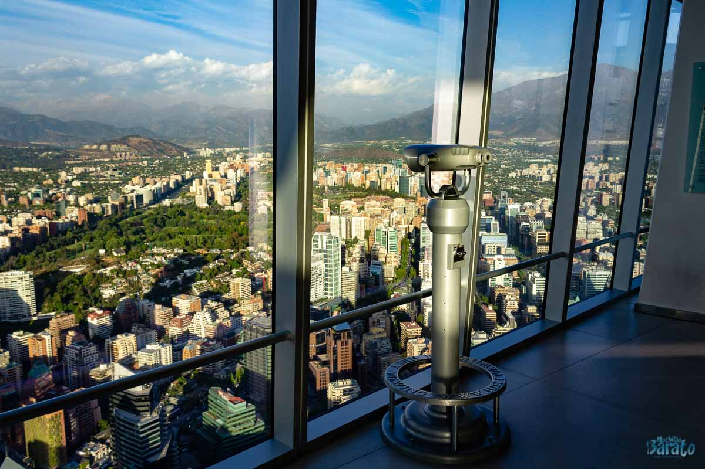
O Sky Costanera é uma das atrações turísticas mais famosas de Santiago, no Chile, localizado no topo do edifício Gran Torre Santiago, o mais alto da América do Sul. Seu mirante oferece uma vista panorâmica de 360° da capital chilena, permitindo observar seus bairros, montanhas e a imponente Cordilheira dos Andes. O local é ideal para apreciar o pôr do sol, tirar fotografias incríveis e contemplar a cidade de uma perspectiva única, tornando-se uma parada imperdível para quem visita Santiago.
Cerro Santa Lucia
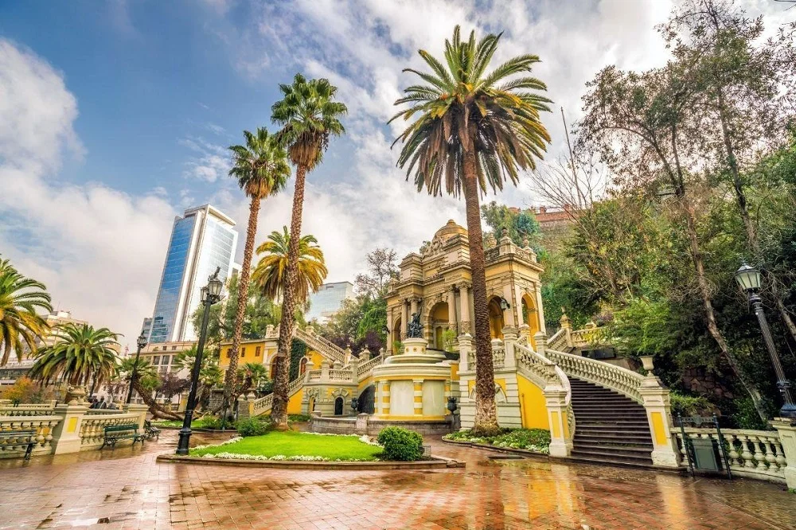
O Cerro Santa Lucía é um dos pontos turísticos históricos mais encantadores de Santiago, no Chile. Localizado no coração da cidade, o parque possui jardins bem cuidados, fontes ornamentais, escadarias de pedra e construções históricas que tornam o passeio ainda mais especial. Ao chegar ao topo, os visitantes podem apreciar uma bela vista panorâmica da capital chilena, cercada pela imponente Cordilheira dos Andes.É um destino ideal para quem deseja explorar a história, a arquitetura e a beleza natural de Santiago.
Peru
Aprecie as lindas Montanhas Da,Terra dos Incas
Machu Picchu
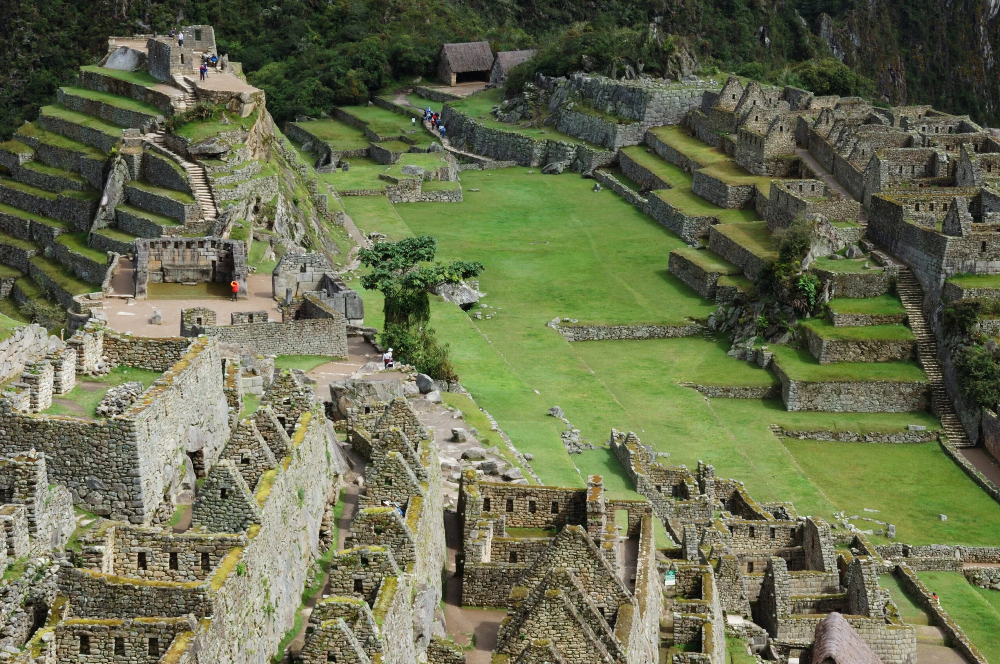
Machu Picchu é uma das atrações turísticas mais famosas do Peru e um dos maiores símbolos da antiga civilização inca. Localizada no alto das montanhas dos Andes, essa cidade histórica impressiona pela arquitetura de pedra, pelos terraços agrícolas e pelas paisagens cercadas por montanhas verdes. Reconhecida como Patrimônio Mundial pela UNESCO e uma das Novas Sete Maravilhas do Mundo, Machu Picchu oferece uma experiência única para quem deseja explorar a história, a cultura e a beleza natural do Peru.
Cuscu
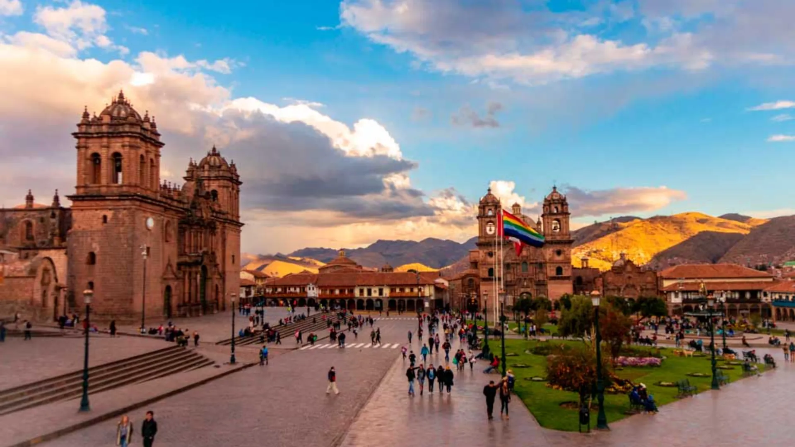
Cusco é uma das cidades mais fascinantes do Peru, conhecida por sua rica história e por ter sido a antiga capital do Império Inca. Suas ruas de pedra, construções históricas e sítios arqueológicos revelam a mistura entre a cultura inca e a arquitetura colonial espanhola. Cercada pelas montanhas dos Andes, a cidade encanta os visitantes com suas paisagens, mercados tradicionais e culinária típica. Além disso, Cusco é um dos principais pontos de partida para quem deseja conhecer Machu Picchu e o Vale Sagrado dos Incas.
Awana Kancha
.webp)
Awana Kancha é um centro cultural e turístico localizado próximo a Cusco, no Peru, conhecido por valorizar as tradições andinas e a criação de animais típicos da região, como lhamas, alpacas e vicunhas. No local, os visitantes podem conhecer esses animais de perto, aprender sobre a produção artesanal de tecidos e observar técnicas tradicionais de tecelagem transmitidas entre gerações. É uma ótima oportunidade para explorar a cultura peruana e descobrir a importância da lã e do artesanato para as comunidades andinas.
Argentina
Adentre na cultura da, Terra do Tango
Caminito
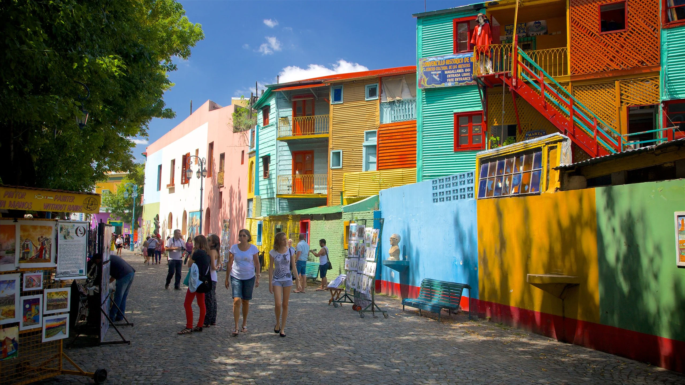
O Caminito é uma das atrações turísticas mais famosas de Buenos Aires, na Argentina, conhecido por suas ruas coloridas, casas vibrantes e atmosfera artística. Localizado no bairro de La Boca, o local reúne murais, esculturas, artistas de rua e apresentações de tango que celebram a cultura argentina. Suas construções coloridas e seu charme histórico tornam o passeio perfeito para tirar fotografias, conhecer o artesanato local e vivenciar a energia de Buenos Aires. É um destino imperdível para quem deseja explorar a arte e a tradição argentina.
Casa Rosada
.webp)
A Casa Rosada é um dos edifícios históricos mais conhecidos de Buenos Aires, na Argentina, localizada em frente à Plaza de Mayo, no centro da cidade. Sua característica fachada rosa chama a atenção dos visitantes, enquanto sua arquitetura elegante representa parte importante da história do país. O edifício é a sede da Presidência da Argentina e abriga espaços históricos e um museu que permite conhecer mais sobre a política e a cultura argentina. É um ponto turístico imperdível para quem deseja explorar a história e os monumentos de Buenos Aires.
Parque Naconal Terra do Fogo
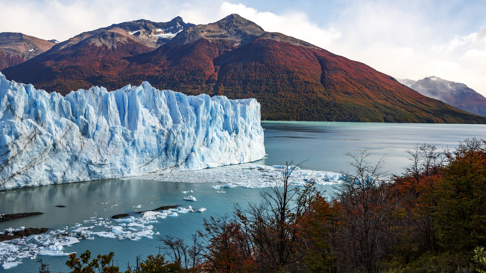
O Parque Nacional Terra do Fogo é um dos destinos naturais mais impressionantes da Argentina, localizado próximo à cidade de Ushuaia, no extremo sul do país. O parque encanta os visitantes com suas montanhas, florestas, lagos cristalinos e paisagens que combinam mar e natureza. Além de abrigar uma grande diversidade de animais e plantas, oferece trilhas, mirantes e passeios ao ar livre, perfeitos para quem busca aventura e tranquilidade. É um lugar ideal para explorar a beleza da Patagônia e conhecer a natureza do chamado “Fim do Mundo”.
Colômbia
Visitando a vasta natureza do, País da Beleza
Cartagena das Índias
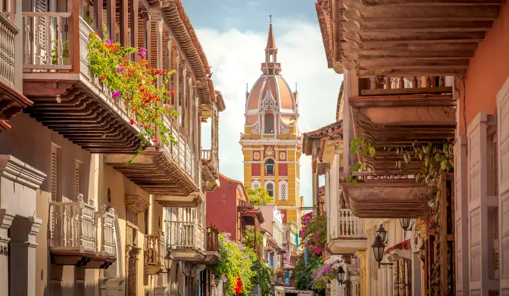
Cartagena das Índias é uma das cidades mais encantadoras da Colômbia, conhecida por suas ruas coloridas, muralhas históricas e arquitetura colonial. Localizada na costa do Mar do Caribe, a cidade combina história, cultura e belas paisagens tropicais. Seus edifícios vibrantes, praças charmosas e praias atraem visitantes do mundo inteiro. É um destino perfeito para quem deseja explorar o passado colombiano, conhecer a cultura local e aproveitar o clima caribenho.
Vale do cocora
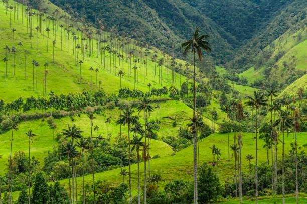
O Vale do Cocora é um dos destinos naturais mais impressionantes da Colômbia, localizado na região cafeeira do país. Conhecido por suas gigantescas palmeiras-de-cera, consideradas as mais altas do mundo, o vale apresenta montanhas verdes, paisagens exuberantes e trilhas cercadas pela natureza. O local é perfeito para caminhadas, fotografias e passeios ao ar livre, oferecendo aos visitantes uma experiência única em meio à beleza natural colombiana.
Comuna 13
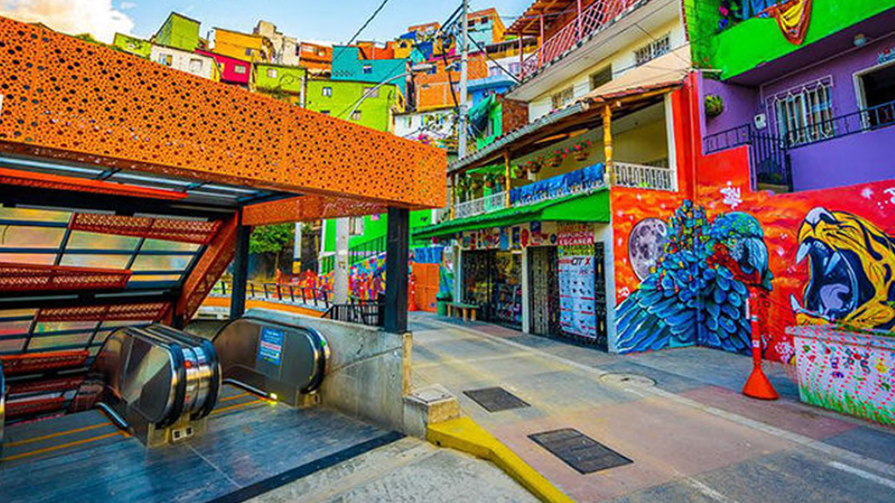
A Comuna 13 é um dos lugares mais marcantes de Medellín, na Colômbia, conhecida por sua arte urbana, seus grafites coloridos e sua história de transformação social. Antigamente, marcada pela violência, a região tornou-se um importante ponto turístico e símbolo de superação para a comunidade local. Suas escadas rolantes ao ar livre, apresentações de dança e manifestações artísticas atraem visitantes de várias partes do mundo. É um destino ideal para conhecer a cultura colombiana, explorar a criatividade dos moradores e descobrir uma história de renovação e esperança.